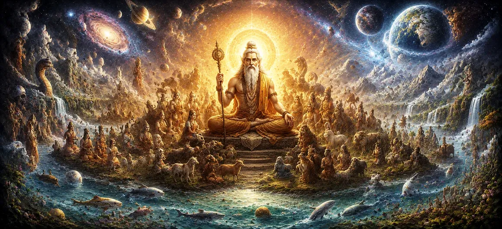

कश्यप की सृष्टि और वंश
उमा संहिता के अध्याय 31, अध्याय 32 में उल्लिखित व्यापक माध्यमिक रचना पर निर्माण प्रस्तुत है कश्यप की सृष्टि और वंश, पौराणिक विद्या के सबसे महत्वपूर्ण पैतृक स्तंभों में से एक पर ध्यान केंद्रित करना। दक्ष की बेटियों से अपने विवाह के माध्यम से, ऋषि कश्यप देवताओं, असुरों, नागों, पक्षियों और जानवरों सहित विविध ब्रह्मांडीय गुटों के पूर्वज बन गए, जिन्होंने प्रभावी ढंग से ब्रह्मांड को विशिष्ट जीवित प्रजातियों से आबाद किया।
यह अध्याय साधकों को एक आवश्यक वंशावली रोडमैप प्रदान करता है, जिसमें बताया गया है कि कैसे व्यक्तिगत पैतृक संघों ने ब्रह्मांड में रहने वाले प्राणियों के विविध वर्गों की स्थापना की।
इस पाठ में मुख्य विषय (11 स्तंभ)
- 01 ऋषि कश्यप सृष्टि के महान पूर्वज हैं →
- 02 प्रजापति दक्ष की पुत्रियों के साथ पवित्र मिलन →
- 03 अदिति और दीप्तिमान देवों की पीढ़ी →
- 04 दिति और शक्तिशाली दैत्यों का उदय →
- 05 दानु और दानव राजवंशों का प्रसार →
- 06 विनता और गरुड़ और एवियन लॉर्ड्स की वंशावली →
- 07 कद्रू और नागों तथा नागों की संतानें →
- 08 क्रोधवशा और जंगली जानवरों और उग्र प्राणियों का प्रसार →
- 09 सामंजस्यपूर्ण और संघर्षपूर्ण संतान का अंतर्निहित संतुलन →
- 10 भगवान शिव सभी वंशजों के सर्वोच्च पर्यवेक्षक के रूप में →
- 11 सृष्टि की अगली पीढ़ियों में परिवर्तन →
1. ऋषि कश्यप सृष्टि के महान पूर्वज के रूप में
यह प्रारंभिक खंड मानस-जन्मे ऋषियों के बीच ऋषि कश्यप की उत्कृष्ट स्थिति को स्थापित करता है, जिन्हें ब्रह्मांड में जीवन का विस्तार करने की महत्वपूर्ण जिम्मेदारी के साथ नामित किया गया है।
उमा संहिता उनकी अपार आध्यात्मिक शक्ति और तपस्वी अनुशासन का सम्मान करती है।
2.प्रजापति दक्ष की पुत्रियों के साथ पवित्र मिलन
पाठ में बताया गया है कि कैसे ऋषि कश्यप ने प्रजापति दक्ष की कई बेटियों से विवाह किया, प्रत्येक मिलन एक अलग चैनल के रूप में कार्य करता था जिसके माध्यम से सार्वभौमिक प्राणियों के विभिन्न वर्ग उभरे।
इन रणनीतिक विवाहों ने संपूर्ण जैविक पदानुक्रम की संरचना की।
3. अदिति और दीप्तिमान देवों की पीढ़ी
उमा संहिता अदिति से पैदा हुई संतान का वर्णन करती है, जिससे आदित्यों और चमकदार दिव्य देवताओं की स्थापना हुई, जो ब्रह्मांडीय धर्म और दिव्य प्रकाश को कायम रखते हैं।
अदिति का वंश आध्यात्मिक शुद्धता और दैवीय व्यवस्था के शिखर का प्रतिनिधित्व करता है।
4. दिति और शक्तिशाली दैत्यों का उदय
धर्मग्रंथ दिति की संतानों का पता लगाता है, जिससे शक्तिशाली दैत्यों का उदय हुआ, जिनकी ताकत और महत्वाकांक्षा ने अक्सर दिव्य सद्भाव को चुनौती दी, जिससे महाकाव्य ब्रह्मांडीय संघर्ष की शुरुआत हुई।
इस वंश ने सार्वभौमिक विकास में विरोध की आवश्यक गतिशीलता को जोड़ा।
6. विनता और गरुड़ और एवियन लॉर्ड्स की वंशावली
पाठ में विनता की संतान का विवरण दिया गया है, जिसमें प्रमुख रूप से पक्षियों के राजा और भगवान विष्णु के दिव्य वाहन गरुड़ के साथ-साथ अन्य राजसी पंख वाले जीव भी शामिल हैं।
एवियन लॉर्ड्स तीव्र आध्यात्मिक आकांक्षा और सांसारिक बंधनों से मुक्ति का प्रतीक हैं।
7. कद्रू और नागों तथा नागों की संतान
उमा संहिता कद्रू से निकली वंशावली का वर्णन करती है, जो भूमिगत क्षेत्रों को नागों, नागों और रहस्यवादी ज्ञान रखने वाले जलीय अभिभावकों से आबाद करती है।
सर्प साम्राज्य भूमिगत पारिस्थितिक और रहस्यमय संतुलन को बनाए रखने में महत्वपूर्ण भूमिका निभाते हैं।
8. क्रोधवशा और जंगली जानवरों और उग्र प्राणियों का प्रसार
धर्मग्रंथ क्रोधवशा की संतानों का वर्णन करता है, जिसमें हिंसक शिकारी जानवर, तेज पंजे वाले पक्षी और तीव्रता और उग्रता का प्रतिनिधित्व करने वाली विभिन्न संस्थाएं शामिल हैं।
ये जीव प्रकृति की आदिम, अदम्य शक्तियों का प्रतिनिधित्व करते हैं।
9. सामंजस्यपूर्ण और संघर्षपूर्ण संतान का अंतर्निहित संतुलन
उमा संहिता बताती है कि कश्यप के वंशजों की विविधतापूर्ण और अक्सर युद्धरत प्रकृति के बावजूद, सृष्टि की व्यापक स्थिरता को बनाए रखने के लिए एक सर्वोच्च संतुलन बनाए रखा जाता है।
सृष्टि के भीतर विविधता एक उच्च विकासवादी उद्देश्य को पूरा करती है।
10. भगवान शिव सभी वंशजों के सर्वोच्च पर्यवेक्षक के रूप में
पाठ दोहराता है कि चाहे देवता हों, दैत्य हों, नाग हों या जानवर हों, ऋषि कश्यप से उत्पन्न प्रत्येक गुट अंततः भगवान शिव की संप्रभु कृपा और दिव्य शासन के तहत काम करता है।
सभी वंश उसी में अपना अंतिम आश्रय और नियमन पाते हैं।
11. सृष्टि की अगली पीढ़ियों में परिवर्तन
ऋषि कश्यप की विशाल वंशावली स्थापित करने के बाद, उमा संहिता अगले अध्याय में आगे की वंशावली शाखाओं और विस्तारित राजवंशों का पता लगाने की तैयारी करती है।
यह चल रही कथा सार्वभौमिक आबादी के पौराणिक विवरण को गहरा करती है।
आध्यात्मिक अंतर्दृष्टि
अध्याय 32 हमें ग्यारह मूलभूत स्तंभों के माध्यम से सिखाता है कि जीवन की विशाल विविधता - दिव्य देवताओं से लेकर जंगली जानवरों तक - एक ही परस्पर जुड़ी पैतृक जड़ से उत्पन्न होती है। इस एकता को पहचानने से सार्वभौमिक सद्भाव को बढ़ावा मिलता है।
अक्सर पूछे जाने वाले प्रश्न
① उमा संहिता में अध्याय 32 का मुख्य विषय क्या है?
अध्याय ऋषि कश्यप की मूलभूत वंशावली पर केंद्रित है, जिसमें बताया गया है कि कैसे दक्ष की बेटियों के साथ उनके संबंधों ने ब्रह्मांड को देवताओं, असुरों, जानवरों और पक्षियों से भर दिया।
② यह अध्याय पिछले सृजन वृत्तांतों से कैसे जुड़ता है?
जबकि अध्याय 31 में सामान्य माध्यमिक सृजन और पैतृक विस्तार का पता लगाया गया है, अध्याय 32 विशेष रूप से ऋषि कश्यप के स्मारकीय वंशावली वृक्ष पर केंद्रित है।
③ उमा संहिता की प्रगति में इस अध्याय के बाद क्या आता है?
कश्यप की वंशावली के व्यापक विवरण के बाद, पाठ सृजन की आगे की पीढ़ियों में आगे के वंशावली विकास में परिवर्तित हो जाता है।